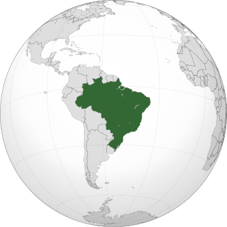

Localização:
O Brasil, oficialmente a República Federativa do Brasil, está localizado no continente americano, mais especificamente na América do Sul. O maior país da América do Sul
Cultura:
A cultura do Brasil é extremamente rica, diversa e vibrante, resultado da mistura de diferentes influências ao longo de sua história. Ela nasceu do encontro entre os povos indígenas originários, os colonizadores portugueses e os africanos trazidos à força durante o período da escravidão, além das contribuições de diversos grupos imigrantes, como italianos, alemães, japoneses, árabes e outros. Essa miscigenação é visível na música, na dança, na culinária, na religião, nas festas populares e nos costumes do dia a dia.
O Brasil é conhecido por manifestações culturais únicas como o Samba, o Frevo, o Maracatu, o Forróe o Bumba-meu-boi, além do famoso Carnaval, que é uma das maiores celebrações culturais do mundo, com desfiles, fantasias e ritmos contagiantes. Na literatura, nomes como Machado de Assis, Clarice Lispector e Jorge Amado são destaques, enquanto nas artes visuais, artistas como Tarsila do Amarale Cândido Portinari marcaram época.
A religiosidade também é um traço marcante, com grande presença do catolicismo, mas também com forte expressão de religiões afro-brasileiras como o Candomblé e a Umbanda, além de várias outras crenças. A alegria, a criatividade e a hospitalidade do povo brasileiro são traços culturais reconhecidos mundialmente, tornando o Brasil um país de intensa expressividade cultural e social.
Culinária:
A culinária do Brasil é extremamente rica e diversa, refletindo a mistura de influências indígenas, africanas, europeias e de vários povos imigrantes. Cada região do país possui sabores, ingredientes e pratos únicos, o que torna a gastronomia brasileira uma das mais variadas do mundo. No Norte, predominam ingredientes típicos da floresta amazônica, como o peixe, o Tucupi, o Jambu e o Açaí, consumido tanto doce quanto salgado.
No Nordeste, a herança africana é muito forte, presente em pratos como o Acarajé, a Moqueca, o Vatapá e o Baião-de-dois, todos marcados pelo uso de Azeite de dendê, leite de coco e pimenta. No Sudeste, destaca-se a feijoada, considerada o prato nacional, além da tradicional cozinha mineira, com suas receitas feitas no fogão a lenha, como o Tutu de feijão, o Pão de queijo e o frango com quiabo.
No Sul do país, o churrasco gaúcho é o principal símbolo gastronômico, acompanhado de pratos com influência europeia, como Polenta, chucrute e massas artesanais. A culinária brasileira também se destaca pelas sobremesas, como o Brigadeiro, o Pudim de leite, o quindim e a cocada. Bebidas como o café, que faz parte do cotidiano da população, e a caipirinha, feita com cachaça e limão, são muito populares. Em todas as regiões, o uso de mandioca, arroz, feijão, milho, carnes e frutas tropicais é muito comum, tornando a culinária brasileira uma expressão viva da sua cultura, marcada pela criatividade, pelo afeto e pela celebração da diversidade.

Habitantes:
A população do Brasil em 2025 é estimada em 221.622.882 pessoas. A maior parte da população vive em áreas urbanas (mais de 85%). As regiões mais populosas são o Sudeste (especialmente São Paulo e Rio de Janeiro) e o Nordeste. O país tem várias megacidades, como São Paulo (a maior da América do Sul) e Rio de Janeiro.
A população é relativamente jovem, mas o país está passando por um processo de envelhecimento. Há uma crescente mobilidade social e uma diversidade regional muito marcada: o Brasil é quase um continente em termos de cultura, clima e economia.
Curiosidades:
- A Floresta Amazônica, maior floresta tropical do mundo, está em grande parte no Brasil e abriga cerca de 10% das espécies conhecidas no planeta.
- Maior produtor de café do mundo: O Brasil é o maior produtor e exportador de café do planeta, responsável por aproximadamente 30% da produção mundial. O café brasileiro é reconhecido internacionalmente pela sua qualidade.
- O Brasil tem a maior biodiversidade do mundo: Além da Amazônia, o Brasil abriga uma variedade impressionante de espécies animais e vegetais. Estima-se que 10% de todas as espécies conhecidas do mundo sejam encontradas no Brasil.
- O Brasil é o único país onde o português é falado como língua oficial: Enquanto toda a América Latina fala espanhol (com exceção da Guiana e das ilhas caribenhas), o Brasil se destaca por ser o único país da região onde o idioma oficial é o português.